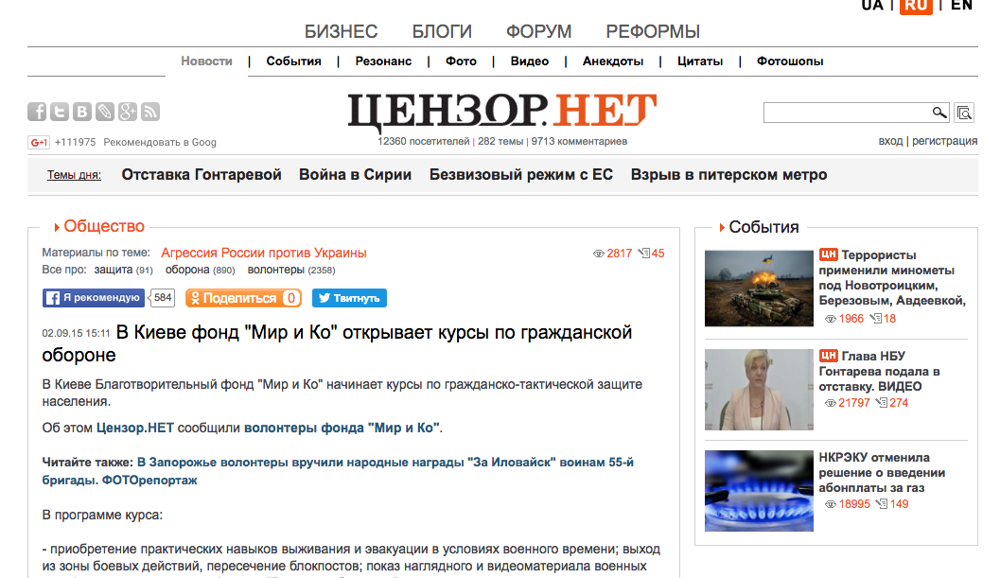
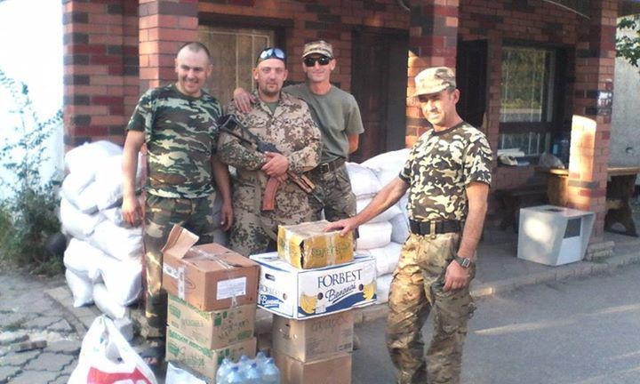
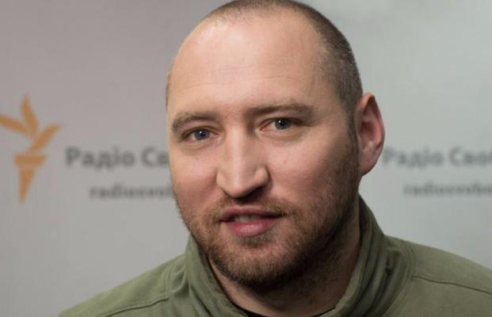
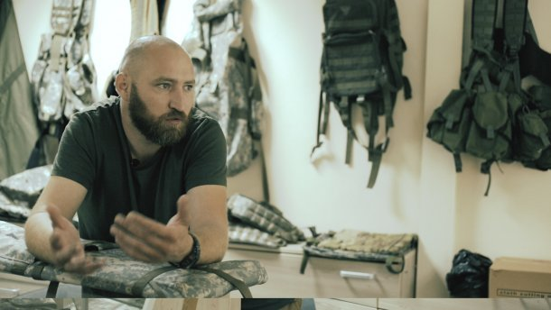
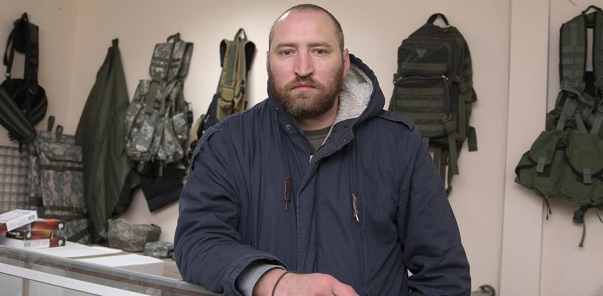
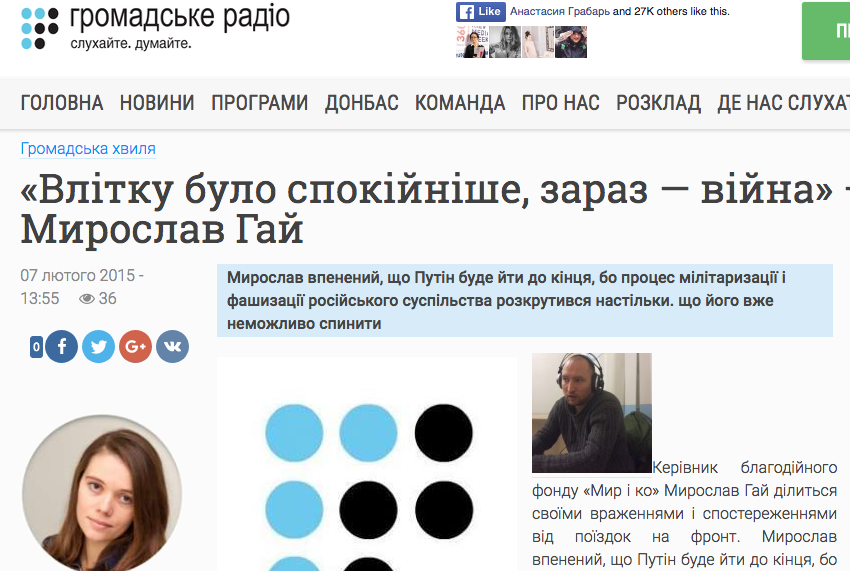
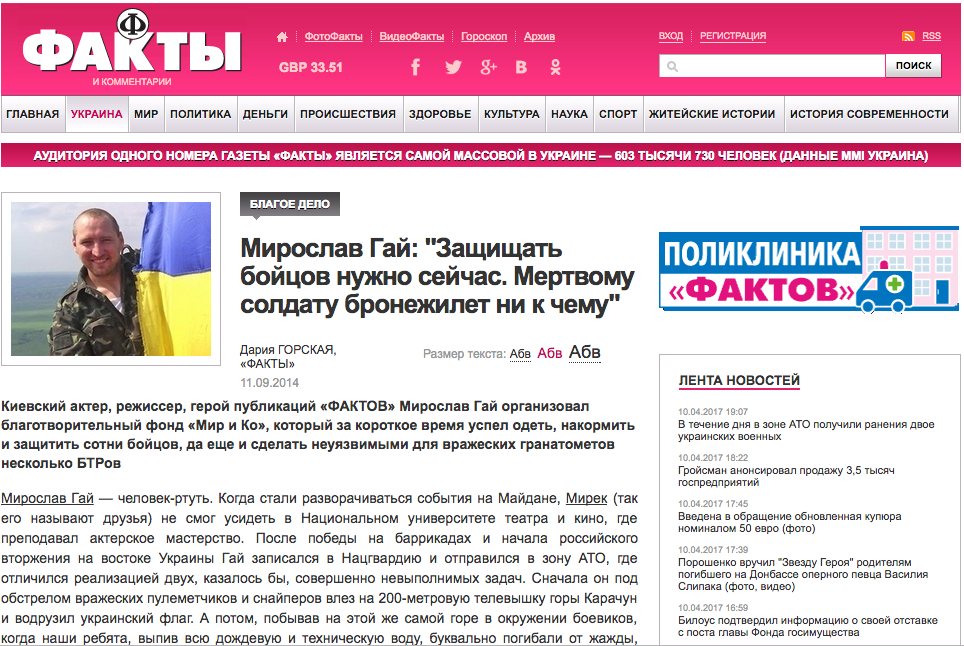
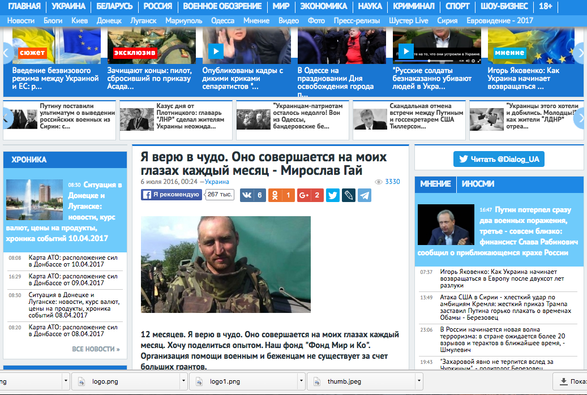

These mentions originally appeared in Ukrainian and Russian-language media. Headlines and excerpts below are translated into English; each links out to the original article.
censor.net

Mir & Co Foundation opens civil defense courses in Kyiv
The Mir & Co charitable foundation is launching civil-tactical defense courses for the public in Kyiv.

"Both volunteers and soldiers know the war will go on" — volunteers Myroslav Hai and Oleksandr Vendiuk
The Mir & Co charitable foundation hasn't existed for long, but is very close to the soldiers it helps — its founders, Myroslav Hai and Oleksandr Vendiuk, are former fighters of the National Guard's 1st Reserve Battalion named after Kulchytskyi.
FaceNews

Myroslav Hai: I believe in miracles. One happens before my eyes every month
Our foundation, Mir & Co — helping the military and refugees — doesn't run on large grants.
"24" News Channel

Volunteer Myroslav Hai: We saved many lives thanks to fast delivery of humanitarian cargo
After the war, I dream of taking my two sons and traveling somewhere to Kilimanjaro, in Africa.
Focus

Good with fists: how volunteer Myroslav Hai helps himself by saving Ukraine
Myroslav Hai has spent two years stretched thin — volunteering, lobbying for laws, helping build social projects, and often among the first to publish frontline updates.
Hromadske Radio

"It was calmer in summer, now — it's war" — Myroslav Hai
Myroslav is convinced Putin will go all the way, because the militarization and fascization of Russian society has advanced too far to stop.
Fakty i Komentari

Myroslav Hai: "Soldiers need protecting now — body armor is no use to a dead soldier"
Kyiv actor, director, and subject of earlier Fakty features, Myroslav Hai founded the Mir & Co charitable foundation, which in a short time has clothed, fed, and protected hundreds of fighters.
PETRIMAZEPA.COM
Myroslav Hai: on last winter's military events
After the Maidan, most of our "Hundred" went to war in volunteer battalions. The first was the battalion named after Kulchytskyi, then known as a National Guard volunteer battalion.
Dialog.UA

I believe in miracles. One happens before my eyes every month — Myroslav Hai
12 months in. I believe in miracles — one happens before my eyes every month. Our Mir & Co Foundation doesn't run on large grants.
Ready to help right now?
Make a donation, and your funds go straight to buying food, gear, and medicine. Choose the support method that suits you.